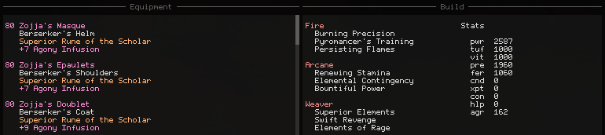

GGDM - Combat Analysis Mod for Guild Wars 2

GGDM was an addon for Guild Wars 2 that I developed and maintained from 2015 to 2018. It started off as a simple tool to display personal DPS in the game, but its feature list grew:
- Real-time group and personal DPS analysis and logging
- GUI modifications overlays for healing and combat
- Automatic network updates and real-time reloading
- Build templates for swapping gear, traits and skills
This post walks through the development of these features and reverse engineering of the game.
Note: I still refer to the addon as a “meter” below, even if it’s grown to include much more.
DLL Proxying
Injecting code into Guild Wars 2 is as simple as having it
load a DLL proxy. I substitute the system d3d9.dll by
providing my own version placed in the game’s directory. This gives
direct access to the engine’s IDirect3D9 interface,
providing an easy opportunity to patch IDirect3DDevice9::Present
and IDirect3DDevice9::Reset. I make use of these functions
in both updating the meter and handling D3D9 resources used
to render the meter’s overlay.
Standard Windows DLL load order first looks at the application directory when loading a DLL. As long as you provide exports for all the functions the game imports from the DLL (and intercept and redirect those to the real DLL), the DLL proxy is functionally the same as the real one. This is more convenient than having to run a code injector since the DLL gets loaded automatically by the operating system.
Hot-Reloading
Launching the game and logging into a map usually takes around
a minute to complete. For fast iteration and testing of the meter,
I developed a hot-reloading system. The d3d9.dll proxy doesn’t
contain any game specific code, but rather a system that handles
loading the meter’s DLL.
DLL files are write-locked on disk when loaded by Windows. I copy the meter DLL to a temporary directory and load it from there to allow the original meter DLL to be overwritten for new compilations and automatic updates. The loader waits for either a hotkey combination or the meter itself to request a reload, the latter of which is typically performed for reloading after an update from the network. The temporary file is removed when the game is closed.
Automatic Updates
The meter can update itself from the network with a new version and reload itself while the game is running with the hot-reload system. Security was an important concern from the start, so I designed the update system to satisfy both integrity and authenticity security goals.
The meter uses a CRC32 for determining version, but for authenticity and integrity it makes use of RSA signing and a SHA-256 hash. I generated a public/private 4096-bit RSA key pair and embedded the public key into the meter’s binary. Modern browsers do a similar technique with public key pinning - a static certificate pin list embedded into the browser binary.
To issue a valid update, I have to produce a signature by signing the SHA-256 hash of the meter’s update data with my private key. The signature is sent alongside the update data and is verified by the client using the embedded public key. The update is only written to disk once it has been verified. If the verification fails, the update data in memory is overwritten with zeros.
This design prevents man-in-the middle, DNS modification, IP spoofing, and other related attacks. An attacker also isn’t capable of swapping out updates on the server if the server was compromised. Provided that my private key is kept secure, and that the initial download of the meter comes from a secure source, updates are secure.
I deliver update data over UDP for performance, with minimal connection state for each client (ip:port pair). The server blocks IP spoofing attempts (and amplification attacks) by requiring connecting clients to respond with a server generated token before sending the server sends any update data (similar to TCP SYN cookie). Each IP is additionally limited to a few active connections at once, to prevent a single connection from creating thousands of clients with different port numbers. Each client has a limited amount of bandwidth available before being throttled or disconnected. Most denial of service attacks are prevented with these restrictions.
This system works out to 48 bytes per client node. No receive or send buffers are required, so there’s significantly less memory overhead than anything written using TCP. The disadvantage of this system is compatibility. While the the client can connect on any port they choose, not every ISP and router configuration can properly track and manage UDP “connections” – particularly ones that share IPV4 addresses. This is mostly a concern for the few ISPs in Europe that perform Carrier-grade NAT with Dual-Stack Lite.
Overlay Rendering
The meter renderer is written targeting D3D9 (the game still uses it). It renders 2D primitives in a single draw call with a vertex and index buffer. The renderer is incredibly fast – preparing and submitting tens of thousands of vertices for drawing is done under 100 microseconds.
The font is also my own design, embedded into the meter as a 1-bit image. It supports the full latin character set (0x20 - 0xFF) in only 1673 bytes, smaller than its source PNG file (1739 bytes). The image is converted and expanded at runtime into a 32-bit RGBA texture (256x128).
Bitmap fonts are an obvious choice when performance matters. Anti-aliased fonts are only legible and attractive at small size when you control the background color, or you can read the background data. Clear-Type does the latter, but doing a GPU readback for the current scene isn’t cheap for performance.
Immediate Mode GUI
I’m familiar with ImGui, but I wrote my own immediate mode GUI library instead. Binary size, compile times, and performance were the primary factors in the decision, but appearance was also another.
It shares most of the same feature set with ImGui, but with two restrictions. Multi-line elements (like graphs) may never be placed in a scroll region and every window must be initialized during creation. These restrictions enable the GUI to be rendered in a single draw call (no scissor rects), and allow for the vertices and indices to be written directly into their respective buffers (avoiding a memcpy).
The API is simple, and the panel above is generated with the following code:
if (gui::add_window("Options", b_options) == false) {
return;
}
gui::set_columns(3);
static i32 tab_idx;
gui::add_tab(tab_idx, 0, "General");
gui::add_tab(tab_idx, 1, "Keybinds");
gui::add_tab(tab_idx, 2, "Debug");
gui::set_columns(1);
if (tab_idx == 0) {
static gui::scroll_t scroll;
gui::add_scroll(&scroll);
gui::add_header("Meter");
gui::add_check_node(c_dps_auto_hide, "Auto Hide");
gui::add_check_node(c_dps_auto_pos, "Auto Position");
gui::add_check_node(c_dps_auto_size, "Auto Size");
gui::add_check_node(c_dps_show_profs, "Show Professions");
gui::add_check_node(c_dps_show_bars, "Show Bars");
gui::add_check_bind(b_dps_rolling, "Rolling Mode");
gui::add_check_bind(b_dps_cleave, "Cleave Mode");
gui::add_label("Interval (s)");
gui::add_input_int_node(c_dps_interval, 1, 60);
gui::add_header("Logging");
gui::add_check_node(c_log_enabled, "Enabled");
gui::add_check_node(c_log_auto_start, "Auto Start");
gui::add_check_node(c_log_auto_save, "Auto Save");
gui::add_label("Min Duration (s):");
gui::add_input_int_node(c_log_auto_time, 0, 9999);
gui::add_header("Panels");
gui::add_check_bind(b_build, "Build");
gui::add_check_bind(b_compass, "Compass");
gui::add_check_bind(b_log, "Log");
gui::add_check_bind(b_player_info, "Player Info");
gui::add_check_bind(b_target_info, "Target Info");
gui::end_scroll();
} // other tabs excluded
Gathering Data
Guild Wars 2 offers no API for combat data, so I have to hook the game. All combat
data is derived from the game’s network messages. The game has roughly
~1300 different types of messages, but maintains a dispatch table for each type.
Reversing each function individually would normally be too tedious, but the devs
have “left” a shortcut – most functions in Guild Wars 2 make use of a custom
version of assert used for crash logging.
For example, there’s a function with the following strings referenced:
STR: "character", "itemDef", "armorDef", "..\..\..\Game\Char\Cli\ChCliInventory.cpp"
From these four strings alone I can easily deduce that this function is used for handling something to do with equipment in the player’s inventory. Decompiling this function or going through with a debugger would then reveal that this function was involved in verifying that a piece of equipment was valid to equip.
STR: "character", "sourceAgent", "..\..\..\Game\Char\Cli\ChCliMsg.cpp"
Agents are entities in the game world, and characters are a specific type of entity that the player inherits from. The assertion strings imply something is happening to the “character” in this “Character Client Message” caused by a “sourceAgent”. Reversing this function shows that it’s called when damage is given or dealt to a character.
I gather the following types of events by hooking the game’s network messages:
- Damage done to agents (includes interrupts, blocks, evades)
- Boon/condition applications
- Boon/condition multi stack removals, cleanses
- Boon/condition single stack removals
- Skill casts
- Health updates to agents
- Weapon swaps
- Combat state changes
The data for each event type is grouped together inside my “event” union:
struct ev_buff_apply_t {
u16 target;
u16 source;
u16 skill;
u8 level;
u8 active;
u16 id;
u16 overstack;
u32 duration;
};
struct ev_buff_cleanse_t {
u16 target;
u16 source;
u16 skill;
u32 duration;
u32 longest;
};
struct ev_buff_remove_t {
u16 target;
u16 source;
u16 skill;
u16 id;
u32 duration;
u32 left;
};
struct ev_cast_t {
u16 target;
u16 skill;
u8 quickness;
u32 duration;
f32 rate;
};
struct ev_damage_t {
u16 target;
u16 source;
u16 skill;
u8 type;
u8 flags;
i32 value;
};
struct ev_health_t {
u16 target;
i32 value;
i32 total;
};
struct ev_state_t {
u16 target;
u16 action;
};
struct ev_swap_t {
u16 target;
u8 set;
};
struct event_t {
u32 time_ms;
u16 type;
u16 target;
u16 source;
union {
ev_buff_apply_t buff_apply;
ev_buff_cleanse_t buff_cleanse;
ev_buff_remove_t buff_remove;
ev_cast_t cast;
ev_damage_t damage;
ev_health_t health;
ev_state_t state;
ev_swap_t swap;
};
};
Each agent on the map is identified by a 16-bit integer ID. I store these IDs for targets and sources as needed for debugging, but I also remap these identifiers to my own IDs for agent metadata lookup:
struct agent_t {
...
u16 log_id;
u16 game_id;
u16 species_id;
u8 subgroup_id;
u8 profession_type;
u8 is_player;
u8 is_name_resolved;
CHAR name[30];
CHAR account[30];
stats_t stats;
gear_t gear;
...
};
When an agent is removed from the map (death, despawn, disconnection), their ID can be reused for newly spawning players or enemies. I maintain a lookup table for the remapping. When a new agent enters the player’s vision during combat I replace any existing entry with the same ID in the lookup table with the new agent if the entry isn’t the same player or “boss” as the new agent. This allows for stats to carry over when agents leave and enter the player’s vision.
DPS Overlay
I keep a hash table for each agent in combat – a target. For each target, I keep another hash table for all the source agents that deal damage to the target. This is enables O(1) insertion for new damage done, and O(1) queries for the currently selected target. Most game maps can only have a total of 100 players, so the source hash table stores its nodes in a fixed size array of 128 source nodes. When full, the array replaces any source that has not attacked the target “recently”.
Calculating DPS is dividing the total damage dealt done by the time spent in combat. Since enemies can become invulnerable, I keep track of when invulnerability starts and ends and “pause” the timer during these periods:
if (ev.state.action == CBT_STATE_INVUL_START) {
frozen = true;
time_elapsed += (ev.time_ms - time_started);
time_started = ev.time_ms;
} else if (ev.state.action == CBT_STATE_INVUL_LEAVE && frozen) {
frozen = false;
time_started = ev.time_ms;
}
Condition Damage Simulation
The server only sends exact damage numbers for any direct damage done within the client’s “vision”. Condition damage is “damage over time” and is only sent when the player is either the source or the target of the damage. Since characters can be “built” in a way that most of their damage is done with conditions, I need to estimate condition damage done by other players to provide useful data for analysis. Damage is calculated on the server and sent to the client, so I use a simulation based on the server’s observable behavior to produce these estimates.
Applying any buff or condition “effect” to an agent starts a timer that ticks once per second for the agent. As long as there are effects on the agent, the timer will continue to tick. This timer affects any future condition applied, since the difference in time between the application of the effect and the next tick is subtracted from the duration of the effect and calculated as a “partial tick”. Partial ticks may also occur when the effect is expiring but the duration is less than a full tick (1000ms).
For each source in the target hash table, I store an array of effects the source applied to the target. Insertion and single stack removal are O(1) (swapping elements around), but multi stack removal is O(n). Although a hash table for each effect type could be used here for performance, a source can apply hundreds of effects to a target, and every type isn’t known in advance. The array is more favorable for its space and cache efficiency.
On every simulation tick (1000ms) I calculate the active number of stacks of each type (bleeding, burning, etc…) and calculate the damage done based on their individual formula. This is done in a loop over each source for each target, since both the target and source need their stats calculated for the condition damage formula.
Since the server doesn’t send the real stat values for any agent that’s not the player, I need to to estimate agent stats based on equipment, traits and active effects. Equipment and traits aren’t supposed to be visible to other players, but Guild Wars 2 sends this data to the client anyway. Most equipment stats can be calculated by cross referencing tooltip data in the game’s content definitions, but traits need to be handled on a case-by-case basis. Most of the maintenance work of the meter was fixing the stat estimation subsystem after balance updates.
With the combination of stat estimation and effect simulation, this system produces near perfect estimates for condition damage. The only source of error occurs due to rounding differences based on tick start and application times. The error typically accumulates on the first and last tick for a single stack at a rate of 0±1 per stack, so error is dependent on the frequency of conditions applied. Most classes produce damage estimates that are within ~0.12% of their real values.
Log Panel
Logging starts when the player enters combat and finishes when the player leaves. It’s setup to save the log to disk if the time spent fighting passes a user-set minimum. The meter watches the log folder for any changes so logs can be shared between players. The meter always keeps the current (or last) combat encounter and dynamically updates the analysis in real-time during combat while the panel is open.
Nearly every list in the log panel can be filtered to help find data faster. Search data is retained and updated for any change in the filter text. Results that pass the filter are simply indices into the data used to populate the list.

The two main views present the same data for two different interpretations: target → source and source → target. A graph view is available for either total damage done or DPS (the last 10s of damage at that point in time). The graph and data can be filtered based on the selected entries in target, source and skill.
The buffs view actually displays both conditions and boons. It gives an analysis of the uptime over the duration of the fight, the average number of stacks on a target, and applications over time (per-source).

The gear panel shows the equipment and traits for every agent/player that took part in combat and their estimated stats used for the condition simulation. Nice for debugging, but also nice to see how other players achieve their DPS numbers.
The last panel is mostly just a direct display of the events in the log with a few filtering options. Damage, skills casts, rotation, and effect application and removal are all available.
Build Templates

Guild Wars 2 encourages swapping equipment and traits for optimizing combat encounters but doesn’t offer any automation for the process. I make use of the system used for estimating stats to also let the user save a “template” of their current “build”. The player can load back the template or remove (strip) all their current gear into their inventory or bank for easy access on another one of the player’s characters.
The process works by calling the same functions (and sending the same network messages to the server) that the game normally does for equip, removal or stat swapping operations in the native UI. All of the functions involved in this process are trivially reversed engineered from the player inventory class and its vtable. The process is functionally identical to manual swapping but happens at a much faster rate.
GUI Additions
The game has a lot of visual “noise” in its presentation that can it difficult to see animations and behavior of enemies. For every enemy in an attack animation, the attack overlay shows the name of the attack the enemy is casting and the remaining duration of the animation. This feature is pretty common in an add-ons for other MMOs (World of Warcraft, Deadly Boss Mods).
The other feature pictured in the screenshot is a compass that renders around the player’s character model. This is useful for navigating and responding to mechanics during raids. I actually render this in 2D, but portions that would obscure the player are faded out.
The “health” overlay displays player status over every allied player. This helps for healing and buffing, since it displays player health and the number of stacks of important damage boosting buffs (might, alacrity). The health bar color also changes depending on player “stance”, letting healers know when the player can’t receive healing.
The “gadget” overlay displays the name and distance for any interactable object in the scene. Since the labels for gadgets vanish over distance and are obscured by walls, this significantly helps in finding these objects. Labels like these are sorted by screen depth after a projection to screen space, but limited to 500 labels per-frame for performance.
Retrieving the agent names is an asynchronous process (and can be fairly slow depending on the agent type). I maintain a lookup table based on agent ID and limit the number of agent names that can be resolved per-frame.
The target info overlay displays the health percentage, health value, and distance to the target. Raw health values are fun to see when you wipe to bosses that only have a few thousand health left. The breakbar value is also displayed if the target’s breakbar is active.
The renderer also supports internal scaling of the UI, so all of these additions work irrespective of monitor DPI. Some elements also scale and change position based on the in-game user setting for interface scale.
Open Source
For now, I plan on keeping GGDM closed source.
I started the project in 2015 as a an add-on that would share DPS between any members of the party running the meter. No condition estimation, combat analysis, or even a real GUI existed at this point of time, and the meter used a client-server model to share the DPS data. I released the source code for this version of the meter in early 2016 and put the project on hold until late 2016. During this time, the project was forked, modified and advertised publicly with changes that endangered the security of its users.
The auto-updating mechanism for the client and server was included in this early source release, but the developer of the fork misunderstood how to deliver authentic updates to their users. While the updates were signed, they sent the public key used for verification along with the update data itself – making the authentication pointless. My public key was even left embedded in every version of the fork.
The fork and its developer were eventually banned from the game for long-standing violations of the terms of service. While open source software can help communities grow, it also provides opportunities for misuse – the developer even took monetary donations for the work.
Closing Thoughts
GGDM was helped influence and popularize the direction of third party add-on development for Guild Wars 2. Players today can enjoy alternatives with similar functionality (arcdps) thanks to the discussion it sparked within the game’s community from forks of the project.